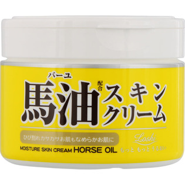

返回列表
产品名称：ロッシモイストエイド 馬油スキンクリーム

コスメテックスローランド ロッシモイストエイド 馬油スキンクリーム ２２０ｇ
メーカー コスメテックスローランド
JANコード 4936201100941
商品の特徴
馬油配合スキンクリーム
ひび割れカサカサお肌もなめらかお肌に
成分・分量
水、グリセリン、セタノール、パルミチン酸エチルヘキシル、BG、ステアリン酸、馬油、ミネラルオイル、シア脂、アロエベラ液汁、モモ葉エキス、尿素、ベヘニルアルコール、ステアリン酸ソルビタン、ジメチコン、EDTA-3Na、水酸化K、エタノール、フェノキシエタノール、プロピルパラベン、メチルパラベン、ポリソルベート60、香料
用法及び用量
適量をお顔や手、足など乾燥が気になる部分によくなじませてください。